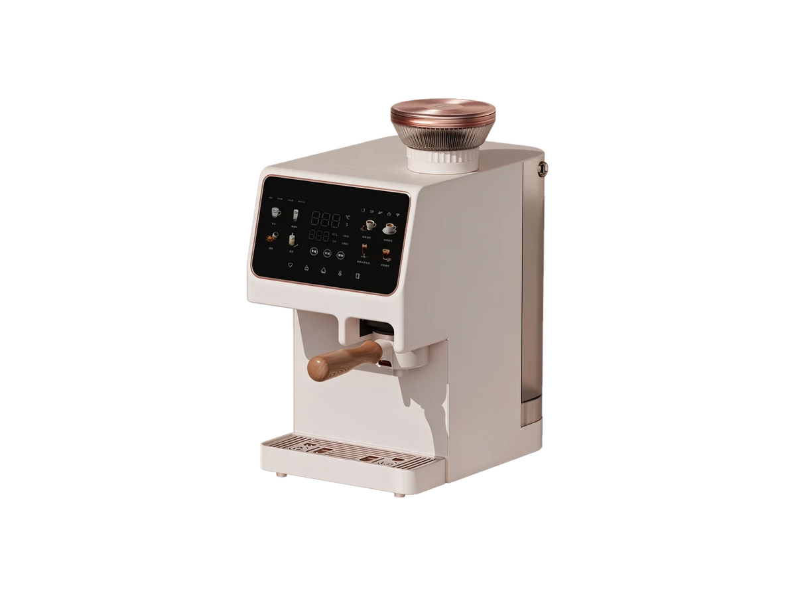

Sobremesa
SobremesaRP-C07
Purificador RO con jarra calentadora
SKU: RP-C07
MOQ: confirmar al consultar
Inicio/Productos/Sistemas de sobremesa/ RP-C11

Sistemas de sobremesa
Purificador RO con café recién molido (M2405RN)
RP-C11 — Purificador RO con café recién molido. Especificación clave: Capacidad RO 50 / 100 / 200 GPD. Las especificaciones se confirman por modelo y pedido.
Solicitar presupuesto para RP-C11
El voltaje / la frecuencia se configuran según el país de destino. Otras configuraciones se confirman por pedido.
RP-C11 es un purificador RO de sobremesa que también prepara café fresco, por lo que una sola máquina cubre agua purificada y café en lugar de dos aparatos separados. Se presenta en dos variantes: un modelo de café recién molido y un modelo 4 en 1 de grano a taza que purifica, muele, extrae y calienta en una sola unidad. La variante de café recién molido funciona a 50, 100 o 200 GPD con un volumen nominal de agua purificada de 4000 L, y ambas variantes calientan el agua a demanda. Está pensado para propietarios de marca que quieren un producto de sobremesa prémium que destaque frente a un purificador de agua estándar.
¿Cuál es la cantidad mínima de pedido?
El primer pedido es de 200 unidades por modelo, y los pedidos repetidos son de 500 unidades.
¿Puedo pedir una muestra antes de un pedido en volumen?
Sí. Las muestras están listas en 15 días y la tarifa de la muestra se reembolsa en su primer pedido en volumen. Los pedidos en volumen tardan 40 días tras la aprobación de la muestra y se envían FOB Shenzhen.
¿Qué variante de café debo elegir?
Cotizar como RP-C11 e indicar la variante: café recién molido o de grano a taza. La variante de grano a taza es la unidad 4 en 1.
Dos variantes de café de sobremesa — cotizar como RP-C11 e indicar la variante (café recién molido o de grano a taza).
Pase el cursor sobre la imagen de una variante para ver sus especificaciones. En pantallas táctiles, toque una imagen.

Especificaciones completas de cada variante, lado a lado. La tabla de especificaciones más abajo muestra los valores de RP-C11.
| Especificación | RP-C11-1 — café recién molido (M2405RN) | RP-C11-3 — variante de grano a taza (Y521) |
|---|---|---|
| Función | Café molido en el momento | Purificación, molienda de granos, extracción y calentamiento instantáneo — cafetera 4 en 1 |
| Capacidad RO | 50 / 100 / 200 GPD | 75 GPD |
| Flujo de agua purificada | ≥0.13 / ≥0.25 / ≥0.52 L/min | 500 mL/min (temperatura ambiente); 400 mL/min (agua caliente) |
| Potencia nominal | 2140 W | 2000 W |
| Dimensiones | 370 × 220 × 383 mm | 238 × 320 × 390 mm (W × D × H) |
| Volumen nominal de agua purificada | 4000 L | A confirmar por pedido |
| Filtración | PP + CTO + PP + RO + C (membrana RO Toray) | PCRO + PCP (= PCRO + C): 2 filtros — filtro 1 compuesto (prefiltro + RO), filtro 2 post-carbono (opcional, mejora el sabor) |
| Depósito de agua | Depósito de agua bruta de 4.8 L; depósito de agua pura de 1.2 L | 4.0 L |
| Calentamiento | 20 L/h a ≥90°C | Calentamiento por película gruesa, calentamiento instantáneo, control PID ±3°C |
| Cápsula | — | No incluido en esta muestra |
| Voltaje / frecuencia | Configurable según el país de destino | Configurable según el país de destino |
| Otras características | — | 5 ajustes de molienda; presión de la bomba 15 Bar; tolva de granos de 150 g; función de cápsula no incluida en esta muestra |
9 filas de especificaciones del catálogo de ROPureOEM.
| Capacidad RO | 50 / 100 / 200 GPD |
|---|---|
| Producción RO | ≥0.13 / ≥0.25 / ≥0.52 L/min |
| Potencia nominal | 2140 W |
| Dimensiones | 370 × 220 × 383 mm |
| Volumen nominal de agua purificada | 4000 L |
| Capacidad de calentamiento | 20 L/h a ≥90°C |
| Filtración | PP + CTO + PP + RO + C (membrana RO Toray) |
| Voltaje / frecuencia | Configurable según el país de destino |
| Otras configuraciones | A confirmar por pedido |
Las especificaciones proceden del catálogo de ROPureOEM. Cuando un valor aún no está confirmado, se indica como «Confirmado por pedido» — no publicamos cifras sin confirmar.
SobremesaPurificador RO con jarra calentadora
SKU: RP-C07
MOQ: confirmar al consultar
 Sobremesa
SobremesaPurificador de sobremesa de cartucho todo en uno
SKU: RP-C08
MOQ: confirmar al consultar
 Sobremesa
SobremesaPurificador RO con hielo, agua caliente y fría
SKU: RP-C09
MOQ: confirmar al consultar
 Sobremesa
SobremesaRO de sobremesa con refrigeración por compresor
SKU: RP-C10
MOQ: confirmar al consultar